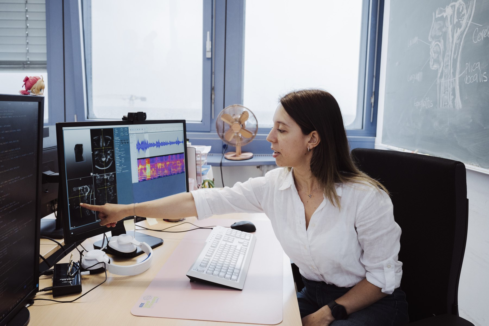

Speech, language, and multimodal biomarkers
Dr.-Ing. Paula A. Pérez-Toro
Group Head for Speech and Language Understanding at the Pattern Recognition Lab, Friedrich-Alexander-Universitat Erlangen-Nurnberg, and Associated Researcher at the Technical University of Munich.
- FAU Pattern Recognition Lab
- Technical University of Munich
- eVoiceNet Management Committee Representative for Germany
- Research on medical imaging, clinically grounded LLMs, and multimodal speech applications

Overview
Explore the profile by section
Use the navigation above to open dedicated pages for research, publications, appointments, awards, service, and contact information.
Research
Research themes in speech, language, medical imaging, multimodal biomarkers, and clinically grounded LLM applications.
Publications
Selected recent publications with links to papers and open-access sources.
Appointments
Current roles, affiliations, and academic trajectory.
Awards
Recent distinctions, prizes, and research recognition.
Service
Reviewing, organization, mentoring, and network activity.
Contact
Institutional details and official external profiles.